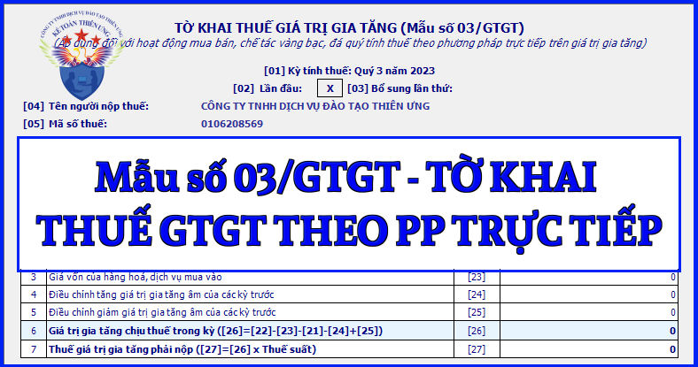

Mẫu tờ khai thuế giá trị gia tăng áp dụng đối với hoạt động mua bán, chế tác vàng bạc, đá quý tính thuế theo phương pháp trực tiếp trên giá trị gia tăng mới nhất năm 2024 là mẫu số: 02/GTGT được ban hành kèm theo Thông tư số 80/2021/TT-BTC
|
CỘNG HÒA XÃ HỘI CHỦ NGHĨA VIỆT NAM
Độc lập - Tự do - Hạnh phúc
TỜ KHAI THUẾ GIÁ TRỊ GIA TĂNG
(Áp dụng đối với hoạt động mua bán, chế tác vàng bạc, đá quý tính thuế
theo phương pháp trực tiếp trên giá trị gia tăng)
[01] Kỳ tính thuế: Tháng 09 năm 2026 /Quý III năm 2026
[04] Tên người nộp thuế:........................................................................
[05] Mã số thuế: [06] Tên đại lý thuế (nếu có):.................................................................. [07] Mã số thuế: [08] Hợp đồng đại lý thuế: Số.............................. ngày.............................
Đơn vị tiền: Đồng Việt Nam
Tôi cam đoan số liệu khai trên là đúng và chịu trách nhiệm trước pháp luật về số liệu đã khai./.
|
Cách kê khai Tờ khai thuế giá trị gia tăng áp dụng đối với hoạt động mua bán, chế tác vàng bạc, đá quý tính thuế GTGT theo phương pháp trực tiếp - mẫu số 03/GTGT theo TT 80/2021 như sau:
I. Đối tượng áp dụng
Người nộp thuế có hoạt động mua bán, chế tác vàng bạc, đá quý tính thuế GTGT theo phương pháp trực tiếp trên giá trị gia tăng.
II. Hướng dẫn kê khai tờ khai mẫu số 03/GTGT
* Phần thông tin chung
+ Chỉ tiêu [01] - Kỳ tính thuế: Khai kỳ tính thuế là tháng phát sinh nghĩa vụ thuế. Trường hợp người nộp thuế được cơ quan thuế chấp thuận khai thuế theo quý hoặc người nộp thuế mới thành lập thì ghi kỳ tính thuế là quý phát sinh nghĩa vụ thuế.
+ Chỉ tiêu [02], [03]: Tích chọn “Lần đầu”. Trường hợp người nộp thuế phát hiện hồ sơ khai thuế lần đầu đã nộp cho cơ quan thuế có sai, sót thì kê khai bổ sung theo số thứ tự của từng lần bổ sung.
Lưu ý:
- NNT thực hiện khai điện tử, Hệ thống Etax hỗ trợ NNT xác định Tờ khai thuế “Lần đầu” tương ứng với từng hoạt động sản xuất kinh doanh tại chỉ tiêu [01a] .
- Kể từ thời điểm Hệ thống Etax có Thông báo chấp nhận hồ sơ khai thuế đối với Tờ khai thuế “Lần đầu”, các Tờ khai thuế tiếp theo của cùng kỳ tính thuế, cùng hoạt động sản xuất kinh doanh là tờ khai “Bổ sung”. NNT phải nộp Tờ khai “Bổ sung” theo quy định về khai bổ sung.
+ Chỉ tiêu [04], [05]: Khai thông tin “Tên người nộp thuế và mã số thuế” theo thông tin đăng ký doanh nghiệp hoặc đăng ký thuế của người nộp thuế.
+ Chỉ tiêu [06], [07], [08]: Trường hợp Đại ký thuế thực hiện khai thuế: Khai thông tin “Tên đại lý thuế, mã số thuế” “số, ngày của hợp đồng đại lý thuế”. Đại lý thuế phải có tình trạng đăng ký thuế “Đang hoạt động” và Hợp đồng phải đang còn hiệu lực tương ứng tại thời điểm khai thuế.
Lưu ý: NNT khai thuế điện tử, Hệ thống Etax tự động hỗ trợ hiển thị thông tin về Đại lý thuế, Hợp đồng đại lý thuế đã đăng ký với cơ quan thuế để NNT lựa chọn trong trường hợp NNT có nhiều Đại lý thuế, Hợp đồng.
* Phần kê khai các chỉ tiêu của bảng
+ Chỉ tiêu [21] - Giá trị gia tăng âm được kết chuyển kỳ trước: Số liệu ghi vào chỉ tiêu này là số liệu về GTGT chịu thuế trong kỳ tại chỉ tiêu số [26] có số liệu nhỏ hơn 0 của Tờ khai thuế GTGT mẫu số 03/GTGT kỳ tính thuế trước liền kề.
+ Chỉ tiêu [22] - Tổng doanh thu hàng hoá, dịch vụ bán ra: Căn cứ vào các hóa đơn bán hàng bán ra trong kỳ của hoạt động mua bán, chế tác vàng bạc, đá quý để kê khai vào chỉ tiêu này.
+ Chỉ tiêu [23] - Giá vốn của hàng hoá, dịch vụ mua vào: Căn cứ vào các hóa đơn, chứng từ mua vào trong kỳ phục vụ cho hoạt động mua bán, chế tác vàng bạc, đá quý để kê khai vào chỉ tiêu này. Riêng các hoá đơn bất hợp pháp thì không được kê khai vào chỉ tiêu này.
+ Chỉ tiêu [24], chỉ tiêu [25] - Điều chỉnh tăng, giảm giá trị gia tăng âm của các kỳ trước: Số liệu để ghi vào chỉ tiêu này là số liệu về giá trị gia tăng âm điều chỉnh tăng/giảm khi người nộp thuế phát hiện kê khai sai, sót các kỳ tính thuế trước đó. Riêng trường hợp cơ quan thuế, cơ quan có thẩm quyền đã ban hành kết luận, quyết định xử lý về thuế có điều chỉnh tương ứng các kỳ tính thuế trước thì khai vào hồ sơ khai thuế của kỳ tính thuế nhận được kết luận, quyết định xử lý về thuế (không phải khai bổ sung hồ sơ khai thuế).
+ Chỉ tiêu [26] - Giá trị gia tăng chịu thuế trong kỳ: Số liệu khai vào chỉ tiêu này được xác định theo công thức [26]=[22]-[23]-[21]-[24]+[25].
+ Chỉ tiêu [27] - Thuế giá trị gia tăng phải nộp: Số liệu khai vào chỉ tiêu này được xác định theo công thức ([27]=[26] x Thuế suất thuế GTGT) nếu chỉ tiêu [26] >0.
* Phần ký tên, đóng dấu
+ Người đại diện theo pháp luật của NNT hoặc người đại diện hợp pháp của người nộp thuế ký tên, đóng dấu hoặc ký điện tử để nộp tờ khai đến cơ quan thuế và chịu trách nhiệm trước pháp luật về số liệu đã khai. Trường hợp đại lý thuế khai thay cho người nộp thuế thì người đại diện theo pháp luật của đại lý thuế ký tên, đóng dấu hoặc ký điện tử thay cho NNT và ghi thêm thông tin họ và tên nhân viên đại lý thuế trực tiếp thực hiện khai thuế và số chứng chỉ hành nghề của nhân viên này vào thông tin tương ứng.

=======================
Các bạn muốn thành thạo các kỹ năng kê khai làm báo cáo thuế, xử lý hóa đơn chứng từ, xử lý doanh thu - chi phí, cân đối lãi lỗ của doanh nghiệp thì các bạn thể tham gia Khóa Học Thực Hành Kế Toán Thuế tại Công ty đào tạo Kế Toán Diệu Tâm
Chi tiết về khóa học các bạn xem tại đây nhé:
Học kế toán Thuế thực hành theo công việc thực tế
Học kế toán Thuế thực hành theo công việc thực tế
===================================================